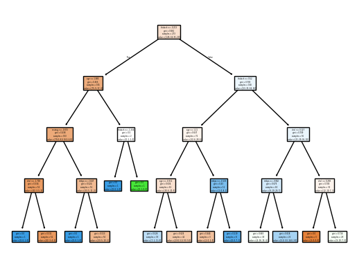

import numpy as np
import pandas as pd
from sklearn.pipeline import Pipeline
from sklearn.neighbors import KNeighborsClassifier
from sklearn.tree import DecisionTreeClassifier, plot_tree
from sklearn.discriminant_analysis import LinearDiscriminantAnalysis
from sklearn.preprocessing import StandardScalerOur dataset consists of clinical data from patients who entered the hospital complaining of chest pain (“angina”) during exercise. The information collected includes:
age: Age of the patientsex: Sex of the patientcp: Chest Pain type- Value 0: asymptomatic
- Value 1: typical angina
- Value 2: atypical angina
- Value 3: non-anginal pain
trtbps: resting blood pressure (in mm Hg)chol: cholesterol in mg/dl fetched via BMI sensorrestecg: resting electrocardiographic results- Value 0: normal
- Value 1: having ST-T wave abnormality (T wave inversions and/or ST elevation or depression of > 0.05 mV)
- Value 2: showing probable or definite left ventricular hypertrophy by Estes’ criteria
thalach: maximum heart rate achieved during exerciseoutput: the doctor’s diagnosis of whether the patient is at risk for a heart attack- 0 = not at risk of heart attack
- 1 = at risk of heart attack
ha = pd.read_csv("https://www.dropbox.com/s/aohbr6yb9ifmc8w/heart_attack.csv?dl=1")Q1: Natural Multiclass Models
Fit a multiclass KNN, Decision Tree, and LDA for the heart disease data; this time predicting the type of chest pain (categories 0 - 3) that a patient experiences. For the decision tree, plot the fitted tree, and interpret the first couple splits.
X = ha[["age", "sex", "trtbps", "chol", "restecg", "thalach"]]
y = ha["cp"]
knn_model = Pipeline([
("scale", StandardScaler()),
("model", KNeighborsClassifier())
])
knn_model.fit(X, y)
dt_model = Pipeline([
("scale", StandardScaler()),
("model", DecisionTreeClassifier(random_state=42, max_depth=4))
])
dt_model.fit(X, y)
lda_model = Pipeline([
("scale", StandardScaler()),
("model", LinearDiscriminantAnalysis())
])
lda_model.fit(X, y)
plot_tree(dt_model.named_steps["model"], feature_names=["age", "sex", "trtbps", "chol", "restecg", "thalach"], filled=True)[Text(0.47115384615384615, 0.9, 'thalach <= -0.213\ngini = 0.661\nsamples = 273\nvalue = [128, 44, 81, 20]'),
Text(0.25, 0.7, 'age <= 1.985\ngini = 0.455\nsamples = 105\nvalue = [75, 9, 17, 4]'),
Text(0.3605769230769231, 0.8, 'True '),
Text(0.15384615384615385, 0.5, 'restecg <= -0.073\ngini = 0.438\nsamples = 103\nvalue = [75.0, 8.0, 16.0, 4.0]'),
Text(0.07692307692307693, 0.3, 'chol <= -1.703\ngini = 0.334\nsamples = 52\nvalue = [42, 3, 5, 2]'),
Text(0.038461538461538464, 0.1, 'gini = 0.0\nsamples = 1\nvalue = [0, 0, 1, 0]'),
Text(0.11538461538461539, 0.1, 'gini = 0.311\nsamples = 51\nvalue = [42, 3, 4, 2]'),
Text(0.23076923076923078, 0.3, 'trtbps <= -1.647\ngini = 0.524\nsamples = 51\nvalue = [33, 5, 11, 2]'),
Text(0.19230769230769232, 0.1, 'gini = 0.0\nsamples = 1\nvalue = [0, 0, 1, 0]'),
Text(0.2692307692307692, 0.1, 'gini = 0.513\nsamples = 50\nvalue = [33, 5, 10, 2]'),
Text(0.34615384615384615, 0.5, 'thalach <= -1.334\ngini = 0.5\nsamples = 2\nvalue = [0, 1, 1, 0]'),
Text(0.3076923076923077, 0.3, 'gini = 0.0\nsamples = 1\nvalue = [0, 0, 1, 0]'),
Text(0.38461538461538464, 0.3, 'gini = 0.0\nsamples = 1\nvalue = [0, 1, 0, 0]'),
Text(0.6923076923076923, 0.7, 'thalach <= 0.52\ngini = 0.703\nsamples = 168\nvalue = [53, 35, 64, 16]'),
Text(0.5817307692307692, 0.8, ' False'),
Text(0.5384615384615384, 0.5, 'age <= 1.11\ngini = 0.637\nsamples = 72\nvalue = [32, 6, 28, 6]'),
Text(0.46153846153846156, 0.3, 'age <= -0.311\ngini = 0.634\nsamples = 61\nvalue = [30, 6, 20, 5]'),
Text(0.4230769230769231, 0.1, 'gini = 0.526\nsamples = 19\nvalue = [7, 1, 11, 0]'),
Text(0.5, 0.1, 'gini = 0.626\nsamples = 42\nvalue = [23.0, 5.0, 9.0, 5.0]'),
Text(0.6153846153846154, 0.3, 'trtbps <= -0.119\ngini = 0.43\nsamples = 11\nvalue = [2, 0, 8, 1]'),
Text(0.5769230769230769, 0.1, 'gini = 0.444\nsamples = 3\nvalue = [2, 0, 1, 0]'),
Text(0.6538461538461539, 0.1, 'gini = 0.219\nsamples = 8\nvalue = [0, 0, 7, 1]'),
Text(0.8461538461538461, 0.5, 'chol <= 0.127\ngini = 0.709\nsamples = 96\nvalue = [21, 29, 36, 10]'),
Text(0.7692307692307693, 0.3, 'trtbps <= -0.062\ngini = 0.675\nsamples = 64\nvalue = [9, 19, 29, 7]'),
Text(0.7307692307692307, 0.1, 'gini = 0.663\nsamples = 39\nvalue = [4, 16, 15, 4]'),
Text(0.8076923076923077, 0.1, 'gini = 0.618\nsamples = 25\nvalue = [5.0, 3.0, 14.0, 3.0]'),
Text(0.9230769230769231, 0.3, 'chol <= 0.289\ngini = 0.705\nsamples = 32\nvalue = [12, 10, 7, 3]'),
Text(0.8846153846153846, 0.1, 'gini = 0.0\nsamples = 3\nvalue = [3, 0, 0, 0]'),
Text(0.9615384615384616, 0.1, 'gini = 0.716\nsamples = 29\nvalue = [9, 10, 7, 3]')]
The tree first splits on thalach where patients with thalach ≤ -0.213 go left while patients with thalach > -0.213 go right. In the second split, on the left branch age becomes the spliting factor and on the right branch thalach becomes the spliting factor.
Q2: OvR
Create a new column in the ha dataset called cp_is_3, which is equal to 1 if the cp variable is equal to 3 and 0 otherwise.
Then, fit a Logistic Regression to predict this new target, and report the F1 Score.
Repeat for the other three cp categories. Which category was the OvR approach best at distinguishing?
ha["cp_is_3"] = (ha["cp"] == 3) * 1
ha[["cp", "cp_is_3"]]
y_cp3 = ha["cp_is_3"]
lr_cp3 = Pipeline([
("scale", StandardScaler()),
("model", LogisticRegression())
])
lr_cp3.fit(X, y_cp3)
ha["cp_is_2"] = (ha["cp"] == 2) * 1
ha[["cp", "cp_is_2"]]
y_cp2 = ha["cp_is_2"]
lr_cp2 = Pipeline([
("scale", StandardScaler()),
("model", LogisticRegression())
])
lr_cp2.fit(X, y_cp2)
ha["cp_is_1"] = (ha["cp"] == 1) * 1
ha[["cp", "cp_is_1"]]
y_cp1 = ha["cp_is_1"]
lr_cp1 = Pipeline([
("scale", StandardScaler()),
("model", LogisticRegression())
])
lr_cp1.fit(X, y_cp1)
ha["cp_is_0"] = (ha["cp"] == 0) * 1
ha[["cp", "cp_is_0"]]
y_cp0 = ha["cp_is_0"]
lr_cp0 = Pipeline([
("scale", StandardScaler()),
("model", LogisticRegression())
])
lr_cp0.fit(X, y_cp0)
pd.DataFrame({
"category": ["0", "1", "2", "3"],
"f1_score": [
cross_val_score(lr_cp0, X, y_cp0, cv=5, scoring="f1").mean(),
cross_val_score(lr_cp1, X, y_cp1, cv=5, scoring="f1").mean(),
cross_val_score(lr_cp2, X, y_cp2, cv=5, scoring="f1").mean(),
cross_val_score(lr_cp3, X, y_cp3, cv=5, scoring="f1").mean()
]
})| category | f1_score | |
|---|---|---|
| 0 | 0 | 0.588682 |
| 1 | 1 | 0.000000 |
| 2 | 2 | 0.085185 |
| 3 | 3 | 0.000000 |
0
Q3: OvO
Reduce your dataset to only the 0 and 1 types of chest pain.
Then, fit a Logistic Regression to predict between the two groups, and report the ROC-AUC.
Repeat comparing category 0 to 2 and 3. Which pair was the OvO approach best at distinguishing?
ha_01 = ha[(ha["cp"] == 0) | (ha["cp"] == 1)]
X_01 = ha_01[["age", "sex", "trtbps", "chol", "restecg", "thalach"]]
y_01 = ha_01["cp"]
lr_01 = Pipeline([
("scale", StandardScaler()),
("model", LogisticRegression())
])
lr_01.fit(X_01, y_01)
ha_02 = ha[(ha["cp"] == 0) | (ha["cp"] == 2)]
X_02 = ha_02[["age", "sex", "trtbps", "chol", "restecg", "thalach"]]
y_02 = ha_02["cp"]
lr_02 = Pipeline([
("scale", StandardScaler()),
("model", LogisticRegression())
])
lr_02.fit(X_02, y_02)
ha_03 = ha[(ha["cp"] == 0) | (ha["cp"] == 3)]
X_03 = ha_03[["age", "sex", "trtbps", "chol", "restecg", "thalach"]]
y_03 = ha_03["cp"]
lr_03 = Pipeline([
("scale", StandardScaler()),
("model", LogisticRegression())
])
lr_03.fit(X_03, y_03)
pd.DataFrame({
"comparison": ["0 vs 1", "0 vs 2", "0 vs 3"],
"roc_auc": [
cross_val_score(lr_01, X_01, y_01, cv=5, scoring="roc_auc").mean(),
cross_val_score(lr_02, X_02, y_02, cv=5, scoring="roc_auc").mean(),
cross_val_score(lr_03, X_03, y_03, cv=5, scoring="roc_auc").mean()
]
})| comparison | roc_auc | |
|---|---|---|
| 0 | 0 vs 1 | 0.757056 |
| 1 | 0 vs 2 | 0.656469 |
| 2 | 0 vs 3 | 0.704615 |
0 vs 1